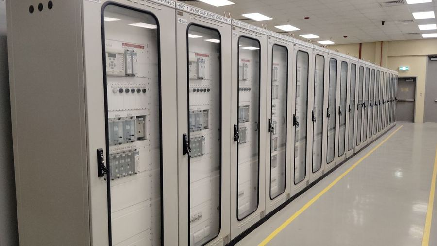
Elektrik Tesisatı ve Enerji
Orta ve alçak gerilim dağıtım altyapısı, trafo merkezleri, pano imalatı ve enerji verimliliği çalışmaları.
- OG / AG dağıtım
- Trafo merkezi
- Pano imalatı
- Kompanzasyon
- Topraklama · paratoner
Kaba yapıdan orta gerilim dağıtımına, mekanik tesisattan güneş enerji santraline kadar; projelendirme, imalat, montaj ve devreye alma tek yüklenici sorumluluğunda yürür. Her sistem ölçüm ve test raporlarıyla, as-built dosyası eşliğinde teslim edilir.
Elektrik ve mekaniğin ayrı ayrı taşerona verildiği projelerde en çok kaybedilen şey koordinasyondur. Biz iki disiplini de kendi ekibimizle yürütüyoruz — sorumluluk tek adreste kalıyor.

Orta ve alçak gerilim dağıtım altyapısı, trafo merkezleri, pano imalatı ve enerji verimliliği çalışmaları.
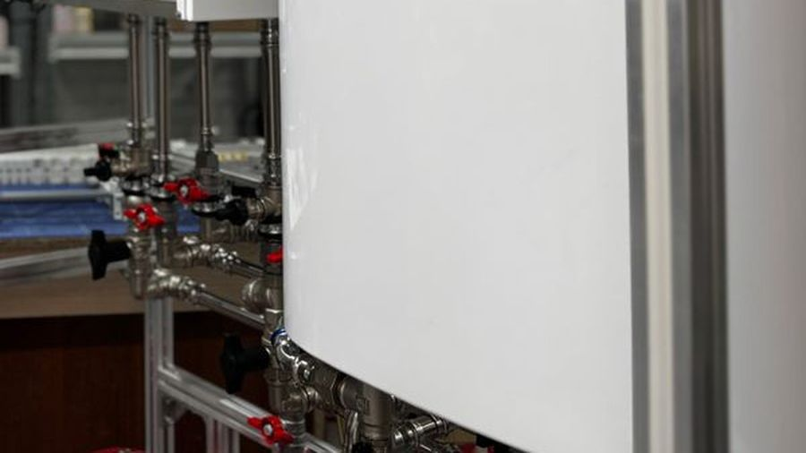
Sıhhi tesisat, ısıtma, doğalgaz ve basınçlı hava hatlarının projelendirilmesi ve uygulaması.
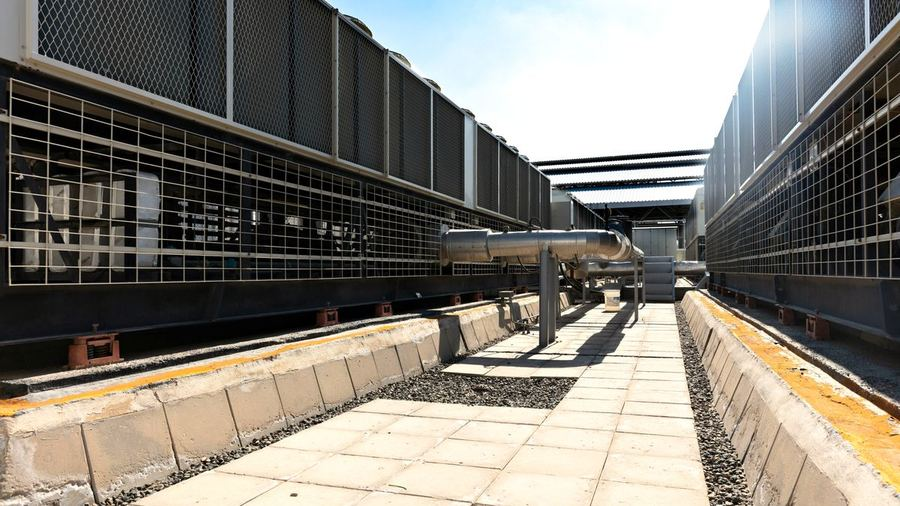
HVAC sistemlerinin ısı yükü hesabından kanal imalatına, devreye alma ve balanslamaya kadar tüm adımları.
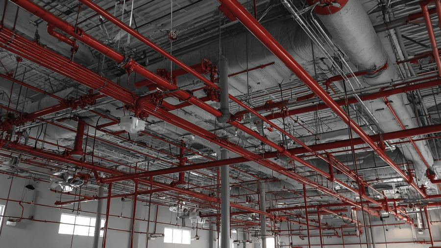
Temsili görselYönetmeliğe uygun algılama, sprinkler ve duman tahliye sistemleri; kabul testleriyle birlikte teslim.
 Temsili görsel
Temsili görsel
Güvenlik, haberleşme ve bina otomasyonu sistemlerinin kurulumu ve merkezi izleme altyapısı.
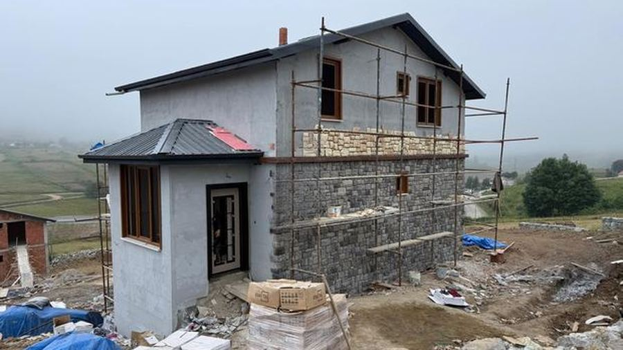
Kaba ve ince yapı işleri, tadilat ve anahtar teslim taahhüt; mekanik-elektrik işleriyle birlikte tek sözleşmede.
Direk montajından iletken çekimine, trafo merkezi kurulumundan koruma koordinasyonuna kadar tesisin şebekeye bağlanan tarafı; enerji müsaadesi ve kabul süreçleri dahil.
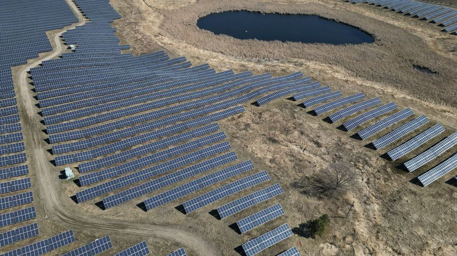
Arazi ve çatı tipi santral kurulumu: saha etüdü, konstrüksiyon ve panel montajı, inverter ve trafo istasyonu, şebeke bağlantısı, devreye alma ve bakım.
Disiplini seçin, ardından kalemi seçin: o imalatın ne olduğunu ve sahada nasıl uygulandığını görün.
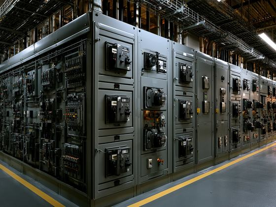
Trafo çıkışından son tüketiciye kadar uzanan orta ve alçak gerilim dağıtım şebekesi.
Nasıl uyguluyoruz Yük listesi çıkarılır, eşzamanlılık katsayısıyla talep gücü belirlenir. Kablo kesiti gerilim düşümü ve akım taşıma kapasitesine göre seçilir, kısa devre akımı hesaplanarak kesici kesme kapasiteleri doğrulanır. Kablo güzergâhları tava ve kanal detaylarıyla çizilir.
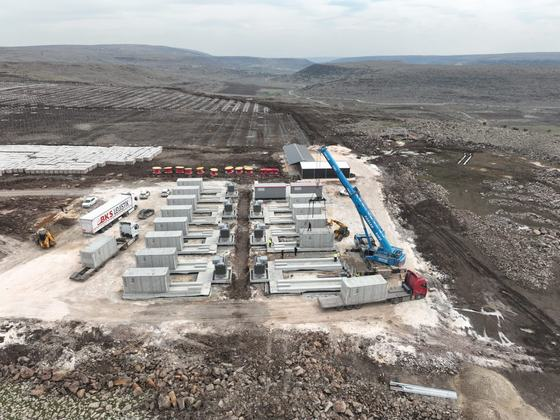
Güç trafosu, orta gerilim hücre grubu ve alçak gerilim panosunun bir arada kurulduğu merkez.
Nasıl uyguluyoruz Trafo gücü talep gücüne ve gelecek yük artışına göre seçilir. Kuru tip ya da yağlı karar verilir, yağlıysa yağ toplama havuzu yapılır. Havalandırma kesiti trafo kaybına göre hesaplanır; hücre yerleşiminde manevra ve kaçış mesafeleri bırakılır.
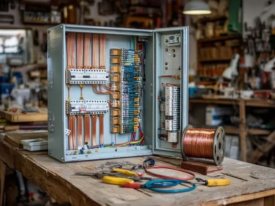
Ana dağıtım, kompanzasyon ve motor kontrol panolarının atölyede imalatı.
Nasıl uyguluyoruz Tek hat şeması üzerinden bara kesiti ve kesici seçimi kısa devre akımına göre yapılır. Pano içi ısınma hesaplanır, gerekirse fan ve filtre eklenir. IP koruma sınıfı ortama göre belirlenir; imalat sonrası yalıtım direnci ve fonksiyon testleri yapılır.
Reaktif güç bedelini önlemek için kondansatör gruplarıyla güç faktörünün düzeltilmesi.
Nasıl uyguluyoruz Önce şebekede reaktif güç ve harmonik ölçümü yapılır. Kondansatör kademeleri yük profiline göre belirlenir; harmonik seviyesi yüksekse reaktörlü (filtreli) tip seçilir. Devreye alma sonrası güç faktörü ölçülerek röle ayarları doğrulanır.
Tesisin toprak bağlantısı ve yıldırımdan korunma tesisatı.
Nasıl uyguluyoruz Toprak özdirenci ölçülerek elektrot tipi ve sayısı belirlenir. Temel topraklaması betonarme içine gömülür, eş potansiyel bara ile metal aksam birleştirilir. Paratoner koruma açısına göre yerleştirilir; teslimde topraklama direnci ölçülüp raporlanır.
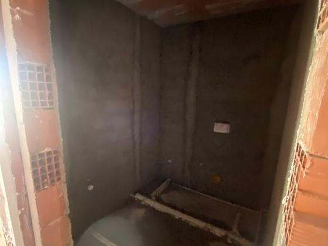
Temiz su, pis su ve yağmur suyu hatlarının tesisi.
Nasıl uyguluyoruz Temiz suda eşdeğer musluk sayısına göre debi, buna göre boru çapı seçilir. Pis suda eğim ve havalandırma kolonu hesaplanır, koku tıkacı derinlikleri kontrol edilir. Kapatmadan önce hatlar basınç ve sızdırmazlık testinden geçirilir.
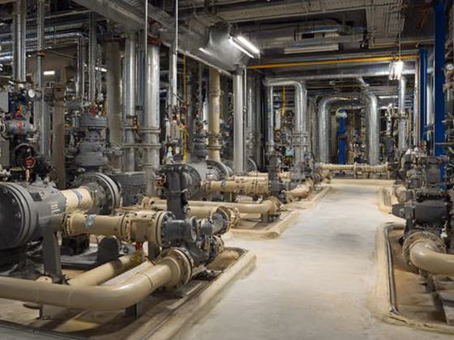
Kazan dairesi, kollektör grubu ve ısıtma devrelerinin kurulumu.
Nasıl uyguluyoruz Mahal bazlı ısı kaybı hesaplanır, cihaz kapasitesi buna göre seçilir. Kollektörde devreler dengelenir, radyatörlü sistemde vana ön ayarı yapılır. Yerden ısıtmada boru aralığı ve devre uzunluğu sınırı gözetilir; sistem yıkanıp havası alınarak devreye alınır.
Gaz teslim noktasından cihaza kadar boru hattı ve gaz açma işlemleri.
Nasıl uyguluyoruz Cihaz kapasitesine göre hat çapı ve basınç düşümü hesaplanır. Kaynaklar sertifikalı personelle yapılır, hat basınçlı testle sızdırmazlık kontrolünden geçirilir. Kapalı hacimlerde havalandırma açıklıkları ve baca kesiti yönetmeliğe göre düzenlenir.
Kompresör, kurutucu ve dağıtım şebekesi.
Nasıl uyguluyoruz Tüketim noktalarının debisi toplanıp eşzamanlılıkla kompresör kapasitesi belirlenir. Hat çapı basınç kaybı hesabıyla seçilir, halka şebeke tercih edilir. Nem hassas üretimde kurutucu ve filtre kademeleri eklenir; kondens tahliyesi eğimli hatla çözülür.
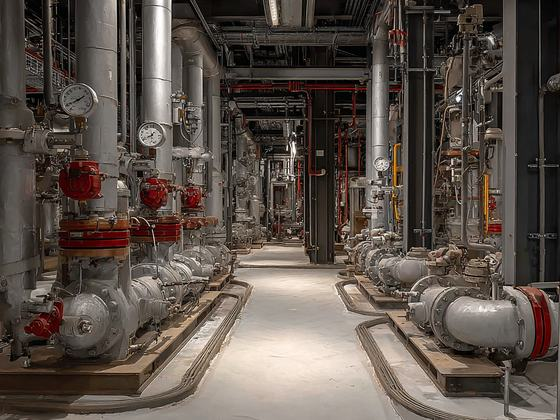
Su basıncını sağlayan pompa ve hidrofor gruplarının seçimi ve kurulumu.
Nasıl uyguluyoruz İhtiyaç debisi ve basma yüksekliği belirlenir, pompa eğrisi üzerinden çalışma noktası seçilir. Frekans konvertörlü grup kullanıldığında sabit basınç kontrolü ayarlanır. Titreşim takozları, esnek bağlantı ve çek valf yerleşimi su darbesini önleyecek şekilde yapılır.

Değişken debili soğutucu akışkanlı ve split tipi iklimlendirme sistemleri.
Nasıl uyguluyoruz İç ünite kapasiteleri mahal ısı yüküne göre seçilir, dış ünite eşzamanlılık oranı kontrol edilir. Bakır hat çapları ve maksimum hat uzunluğu üretici tablosuna göre belirlenir. Montaj sonrası vakum alınır, kaçak testi yapılır ve gaz şarjı tartılarak eklenir.
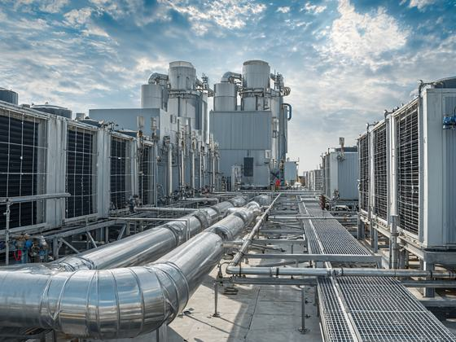
Taze hava, filtreleme ve ısı geri kazanımı yapan merkezi hava işleme üniteleri.
Nasıl uyguluyoruz Kişi başı taze hava debisi ve mahal hacmine göre santral debisi belirlenir. Filtre kademeleri kullanım amacına göre seçilir; hastane gibi hacimlerde HEPA eklenir. Isı geri kazanım tipi iklim verisine göre kararlaştırılır, santral erişim ve filtre değişim mesafeleri bırakılarak yerleştirilir.
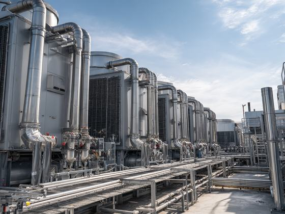
Havanın taşındığı galvaniz sac kanal sistemi ve menfezler.
Nasıl uyguluyoruz Kanal kesitleri sabit sürtünme yöntemiyle boyutlandırılır, hız gürültü sınırında tutulur. Flanş ve conta detayları sızdırmazlık sınıfına göre uygulanır. Isı kaybı olan güzergâhlarda izolasyon yapılır; yangın bölmesi geçişlerine damper konur.
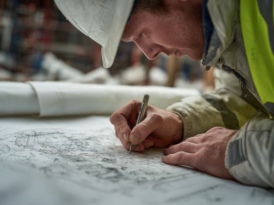
Her mahal için gereken soğutma ve ısıtma kapasitesinin hesaplanması.
Nasıl uyguluyoruz Duvar, çatı ve döşemenin ısı geçirgenlik katsayıları, cam oranı ve yönü, aydınlatma ile ekipman kazançları ve kişi sayısı girilir. Dış tasarım sıcaklıkları bölge verisinden alınır. Sonuç mahal listesi olarak çıkarılır; cihaz seçimi ve kanal boyutlandırması bu tablodan yürür.
Sistemin proje değerlerinde çalıştığının ölçümle doğrulanması.
Nasıl uyguluyoruz Menfez ve kanal debileri anemometre ile ölçülür, damperlerle proje değerine getirilir. Fan devri gerekirse kasnak ya da frekans konvertörüyle düzeltilir. Sonuçlar mahal bazlı tabloya işlenir ve teslim dosyasına konur; sapma kalan noktalar rapora yazılır.
Her cihazın panelde ayrı adresle göründüğü yangın algılama sistemi.
Nasıl uyguluyoruz Dedektör tipi mahale göre seçilir; mutfak ve otoparkta duman yerine ısı dedektörü kullanılır. Koruma alanı ve tavan yüksekliği sınırlarına göre yerleşim yapılır. Çevrim planı çizilir, panel programlanır ve senaryo testleriyle her cihazın doğru adresle alarm verdiği doğrulanır.
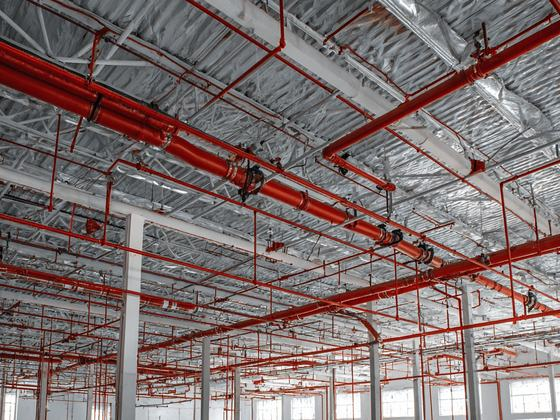
Yangını başlangıç aşamasında otomatik söndüren yağmurlama sistemi.
Nasıl uyguluyoruz Tehlike sınıfı belirlenir; buna göre sprinkler tipi, sıcaklık derecesi ve koruma alanı seçilir. Boru çapları hidrolik hesapla bulunur, en elverişsiz noktada gereken debi ve basınç doğrulanır. Askı aralıkları ve sismik bağlantılar uygulanır; sistem basınç testinden geçirilir.
İlk müdahale için hortum ve lansın bulunduğu dolap sistemi.
Nasıl uyguluyoruz Dolaplar, hortum boyu her noktaya ulaşacak şekilde yerleştirilir; yerleşim kaçış yolu üzerinde ve görünür olur. Besleme hattı sprinkler hattından ayrı ya da ortak olabilir, hidrolik hesapta iki senaryo da kontrol edilir. Devreye alma sırasında lans ucunda basınç ölçülür.
Yangında dumanı tahliye ederek kaçış yollarını görünür tutan sistem.
Nasıl uyguluyoruz Kapalı otoparkta jet fan ve egzoz fanı ile duman güzergâhı oluşturulur. Kaçış merdivenlerinde basınçlandırma yapılır, kapı açma kuvveti sınırı kontrol edilir. Fanlar yangın algılama paneline bağlanır; senaryo testinde fan, damper ve basınçlandırma birlikte denenir.
Söndürme sistemine gereken debi ve basıncı sağlayan pompa grubu.
Nasıl uyguluyoruz Ana pompa hidrolik hesabın gerektirdiği debi ve basınca göre seçilir, yanına yedek ve jokey pompa konur. Elektrik kesintisine karşı dizel pompa değerlendirilir. Devreye alma sırasında performans eğrisi ölçülür ve pompanın basınç düşünce otomatik devreye girdiği doğrulanır.
Bina ve sahanın kamera ile izlenmesi ve kayıt altına alınması.
Nasıl uyguluyoruz Kamera tipi ve lens açısı, izlenecek alanın genişliğine ve tanıma-teşhis ihtiyacına göre seçilir. Kayıt süresi ve çözünürlükten depolama kapasitesi hesaplanır. Ağ anahtarı PoE bütçesine göre boyutlandırılır; gece görüş ve arka aydınlatma koşulları sahada denenir.
Kapılardan kimin, nereye, ne zaman geçebileceğini yöneten sistem.
Nasıl uyguluyoruz Kapı donanımı yön ve yangın senaryosuna göre seçilir; kaçış yolundaki kapılar alarm anında otomatik serbest kalacak şekilde bağlanır. Okuyucu tipi kart ya da biyometrik olarak belirlenir. Yetki grupları ve zaman profilleri tanımlanır, kapı açık kalma süreleri ayarlanır.
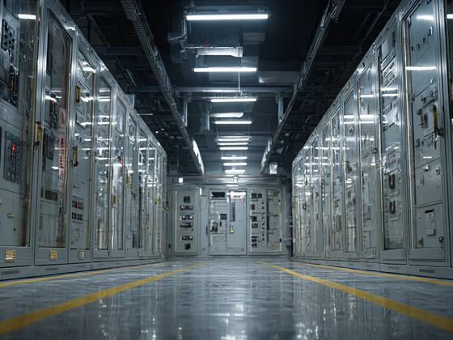
Isıtma, soğutma, havalandırma ve aydınlatmanın merkezden izlenip yönetilmesi.
Nasıl uyguluyoruz Saha cihazları ve sensörler listelenip nokta tablosu çıkarılır. Kontrol senaryoları zaman, sıcaklık, CO2 ve varlık bilgisine göre yazılır. Sistem izleme ekranında mahal bazlı gösterilir; alarm eşikleri tanımlanır ve arıza durumunda hangi cihazın hangi konuma geçeceği belirlenir.
Veri ve ses iletişiminin bakır ve fiber altyapısı.
Nasıl uyguluyoruz Kat dağıtım odaları, yatay kablo mesafesi 90 metreyi aşmayacak şekilde konumlandırılır. Omurga fiber, yatay dağıtım bakır seçilir. Kanal ve tava güzergâhı enerji kablosundan ayrı tutulur; tamamlanan her kanal test cihazıyla ölçülüp sertifika raporu verilir.
Anons ve acil durum seslendirme sistemi.
Nasıl uyguluyoruz Hoparlör yerleşimi mahal hacmine ve yankılanma süresine göre yapılır, ses basıncı arka plan gürültüsünün üzerinde tutulur. Acil durum seslendirmesinde konuşma anlaşılabilirliği ölçülür. Bölge ayrımı yangın senaryosuyla eşleştirilir; hat izleme ile kablo kopması panelde görünür.
İnşaat, mekanik ve elektrik işlerinin tek sözleşmeyle üstlenilmesi.
Nasıl uyguluyoruz İş programı disiplinler arası bağımlılığa göre kurulur: sıva öncesi tesisat, şap öncesi yerden ısıtma gibi kilit noktalar işaretlenir. Tek şantiye şefliği koordinasyonu yürütür. Hakediş ve teslim dosyası tek elden hazırlanır; iş bitiminde as-built çizimler ve test raporları birlikte verilir.
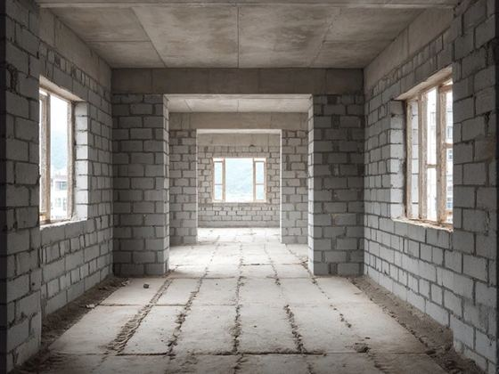
Betonarme sonrası bölme duvar, lento ve hatıl imalatları.
Nasıl uyguluyoruz Duvar güzergâhları aplike edilir, kapı ve pencere boşlukları doğrama ölçüsüne göre bırakılır. Lento ve hatıl açıklığa göre boyutlandırılır. Tesisat şaftları ve baca boşlukları bu aşamada oluşturulur; sonradan kırım gerektirmemesi için elektrik ve mekanik projeleriyle çakıştırma yapılır.
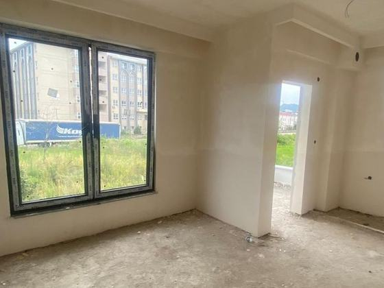
Sıva, şap, kaplama, doğrama ve boya işleri.
Nasıl uyguluyoruz Sıva öncesi elektrik ve sıhhi tesisat duvara alınır, buat ve kutu kotları sabitlenir. Alçı sıva ve saten sonrası şap dökülüp mastarla tesviye edilir. Islak hacimde su yalıtımı kaplamadan önce yapılır; kaplama, doğrama ve boya sırası kirletmeyi önleyecek şekilde planlanır.
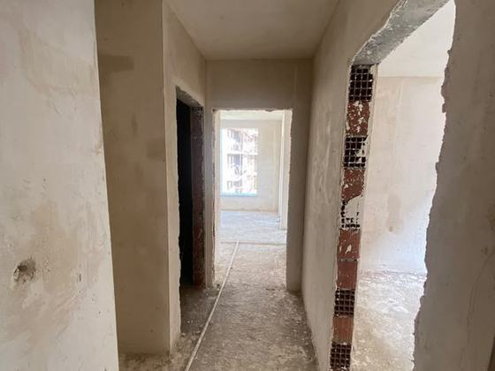
Kullanımdaki yapıda etaplı yenileme çalışması.
Nasıl uyguluyoruz Mevcut tesisat ve taşıyıcı sistem tespit edilir, kırılabilecek ve kırılamayacak duvarlar ayrılır. Çalışma etaplara bölünür, kullanımdaki bölüm tozdan ve gürültüden ayrılır. Elektrik ve su kesintileri saat planına bağlanır; sökülen malzemenin tahliyesi program içinde tutulur.
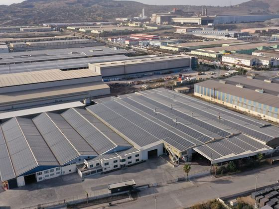
Fabrika ve depo yapılarında zemin, saha ve altyapı imalatları.
Nasıl uyguluyoruz Zemin, forklift ve raf yüklerine göre boyutlandırılır; donatı ve derz aralıkları buna göre belirlenir. Yüzey düzlüğü ölçülerek raf üreticisinin toleransıyla karşılaştırılır. Makine temelleri titreşim yalıtımıyla ayrılır; saha betonu ve drenaj eğimleri yağış verisine göre çözülür.
Enerji nakil hattı direklerinin temeli ve dikimi.
Nasıl uyguluyoruz Güzergâh araziye aplike edilir, direk yerleri koordinatla işaretlenir. Zemin durumuna göre temel tipi ve boyutu belirlenir, beton dökülüp priz süresi beklenir. Direk montajı vinçle yapılır, gönye ve düşeylik kontrol edilir; topraklama elektrotu direk temeline bağlanır.
Direkler arasına iletkenin çekilmesi ve gerdirilmesi.
Nasıl uyguluyoruz Salgı hesabı sıcaklık ve açıklığa göre yapılır, çekim tablosu çıkarılır. İzolatör ve armatürler montajlanır, iletken makaralar üzerinden çekilerek zedelenmesi önlenir. Gerdirme sonrası salgı ölçülür; yol, bina ve diğer hatlara emniyet mesafeleri kontrol edilerek kayda geçirilir.
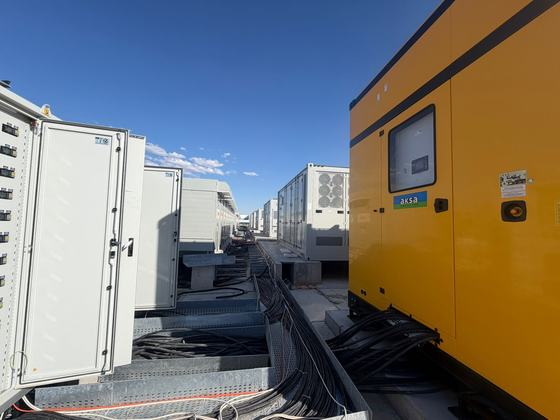
Beton köşk veya bina tipi merkezde trafo ve hücre yerleşimi.
Nasıl uyguluyoruz Köşk yeri erişim ve kablo güzergâhına göre seçilir. Trafo, orta gerilim hücre grubu ve alçak gerilim panosu manevra mesafeleri bırakılarak yerleştirilir. Havalandırma trafo kaybına göre boyutlandırılır, yağlı trafoda yağ toplama havuzu yapılır ve topraklama şebekesi köşk altına serilir.
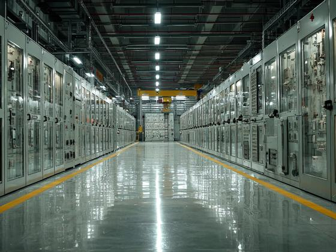
Orta gerilim kesici, ayırıcı ve koruma rölesi düzeni.
Nasıl uyguluyoruz Hücre tipi giriş, çıkış ve trafo koruma fonksiyonuna göre seçilir. Akım ve gerilim trafolarının oranı ile doğruluk sınıfı koruma ihtiyacına göre belirlenir. Röle ayarları seçicilik hesabıyla girilir; sekonder enjeksiyon testiyle koruma fonksiyonlarının doğru zamanda açtırdığı doğrulanır.
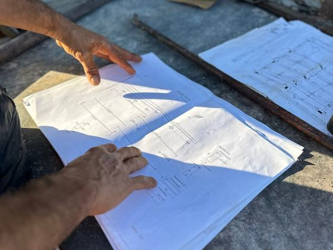
Dağıtım şirketi onayı, sayaç noktası ve kabul süreci.
Nasıl uyguluyoruz Proje dağıtım şirketine sunulur, onay sonrası imalata geçilir. Sayaç noktası ve ölçü trafoları şirket şartnamesine göre kurulur. Saha kabulünde topraklama direnci, röle ayarları ve etiketleme kontrol edilir; geçici kabul dosyası as-built çizim ve test raporlarıyla teslim edilir.
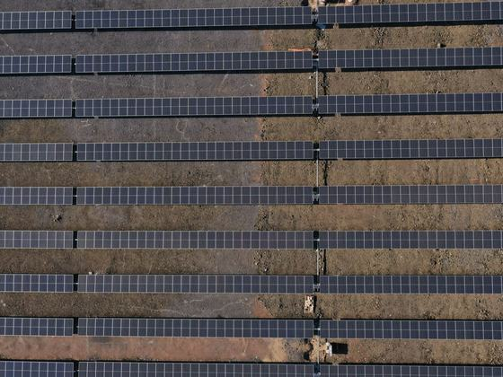
Arazi üzerine kurulan büyük ölçekli güneş enerji santrali.
Nasıl uyguluyoruz Saha etüdünde eğim, gölgeleme ve zemin taşıma gücü incelenir. Dizi aralığı kış gündönümü gölge boyuna göre belirlenir. Konstrüksiyon çakma kazık ya da beton temelle kurulur, panel montajından sonra string akımları ve izolasyon direnci ölçülerek kayda geçer.
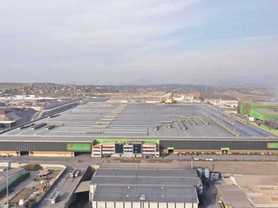
Fabrika, depo ve ticari yapı çatılarında kurulan sistemler.
Nasıl uyguluyoruz Önce çatının panel ve kar yükünü taşıyıp taşımadığı kontrol edilir. Taşıyıcı sistem çatı tipine göre seçilir; membran çatıda balastlı, trapez sacda kelepçeli çözüm kullanılır. Delme gereken yerlerde sızdırmazlık detayı uygulanır, DC hatlar yangın güvenliği için kısa ve erişilebilir tutulur.
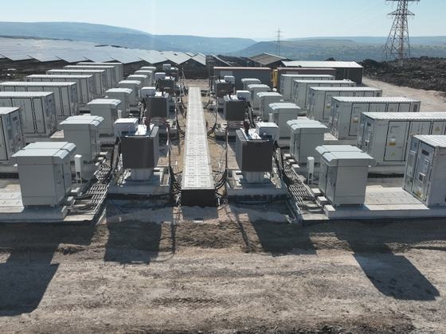
Doğru akımı şebeke uyumlu alternatif akıma çeviren ekipman.
Nasıl uyguluyoruz String ya da santral tipi inverter, saha büyüklüğü ve gölgelenme durumuna göre seçilir. DC/AC oranı üretim profiline göre belirlenir. İnverter ve trafo istasyonu kablo mesafesini kısaltacak şekilde konumlandırılır; soğutma ve servis erişimi bırakılarak montaj yapılır.
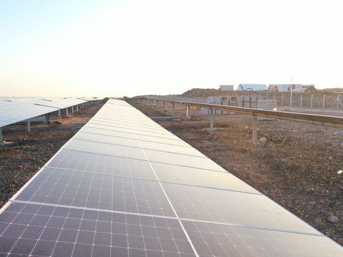
Santralin dağıtım şebekesine bağlandığı nokta ve koruma düzeni.
Nasıl uyguluyoruz Bağlantı noktası ve gerilim seviyesi dağıtım şirketiyle belirlenir. Orta gerilim hücresi, koruma rölesi ve sayaç şirket şartnamesine göre kurulur. Ada modu koruması, gerilim ve frekans sınırları ayarlanır; devreye almada üretim ölçülüp kabul raporuna işlenir.

Kuzey Global Elektromekanik Mühendislik İnşaat Sanayi ve Ticaret Limited Şirketi olarak Ankara merkezli çalışıyor, elektromekanik taahhüt işlerini projeden devreye almaya kadar kendi ekibimizle yürütüyoruz.
Elektrik, mekanik ve inşaat kalemleri tek sözleşmede birleşir; disiplinler arası boşluk kalmaz.
Her sistem test edilir, ölçüm değerleri ve as-built projelerle birlikte dosyalanarak teslim edilir.
Sahada İSG kurallarına tam uyum; ekipman ve personel yetkinliği düzenli olarak denetlenir.
Garanti süresi boyunca periyodik bakım ve arıza müdahalesi; sistemi kuran ekip aynı ekiptir.
Her projede aynı sırayı izliyoruz. Böylece maliyet ve takvim baştan netleşiyor, sahada sürpriz çıkmıyor.
Sahayı yerinde geziyor, mevcut altyapıyı ve ihtiyacı ölçerek kayıt altına alıyoruz.
Hesaplar, sistem seçimi ve metraj çıkarılır; kalem kalem şeffaf teklif sunulur.
İş programına bağlı imalat; haftalık ilerleme raporu ve şantiye koordinasyonu.
Ölçüm ve kabul testleri yapılır, as-built dosya ve kullanım eğitimiyle teslim edilir.
Bir konut, betonarme karkas bittiğinde bitmez. Duvar örgüsünden su yalıtımına, alçı sıvadan ıslak hacim imalatlarına kadar yapının kullanılabilir hâle gelmesi ayrı bir iştir ve sıralaması yanlış kurulduğunda geri dönüşü pahalıdır. Kaba yapıyı da ince yapıyı da aynı ekiple, aynı şantiye şefliği altında yürütüyoruz.
 1 · Kaba yapı
1 · Kaba yapı
Betonarme karkas sonrası bölme duvarları, lento ve hatıl imalatı, kapı-pencere boşluklarının doğrama ölçüsüne göre bırakılması.
 2 · Yalıtım
2 · Yalıtım
Bodrum perdelerinde iç yüzeyden su yalıtımı: yüzey hazırlığı, perde-döşeme birleşiminde pah imalatı ve bitümlü membran uygulaması. Yalıtım kapatılmadan önce kontrol edilir.
 3 · İnce yapı
3 · İnce yapı
Sıva öncesi elektrik ve sıhhi tesisat altyapısının duvara alınması, ardından alçı sıva, saten ve PVC doğrama montajı.
 4 · Teslim
4 · Teslim
Zemin kaplaması, ıslak hacim seramiği ve vitrifiyesi, mutfak tezgâhı, iç kapı ve boya. Daire kullanıma hazır teslim edilir.
Ordu, Cumhuriyet Mahallesi. Bölme duvar ve ıslak hacim imalatlarından mutfak montajı ve iç kapı teslimine kadar süren, kat kat ilerleyen konut şantiyesi.


Müstakil villalarda kaba yapıdan teslime kadar tüm imalat: doğal taş cephe kaplaması, taş istinat duvarı, yerden ısıtma tesisatı, şap, alçı sıva ve ferforje korkuluklu merdiven.


İnce işleri tamamlanmış daireler: laminat parke, ıslak hacim seramiği ve vitrifiyesi, mutfak montajı, iç kapı ve boya. Daireler kullanıma hazır.


Duvarı ören ile sıvayı yapan ayrı firma olduğunda ölçü tutmayan doğrama boşluğu kimsenin sorumluluğunda kalmaz. Aynı ekip yürüttüğü için hata sahada, sırası gelmeden düzelir.
Membran, gömülü tesisat ve sıva altı buat güzergâhı; şap, seramik ya da sıva kapatılmadan önce fotoğraflanır. Sonradan çıkan bir sorunun hangi imalattan geldiği böylece kayıt altında olur.
Sıva altına giren elektrik tesisatı ve ıslak hacim tesisatı, firmanın asıl uzmanlık alanı. İnşaat ekibiyle aynı çatı altında olduğu için kanal, buat ve tesisat güzergâhı sıvadan önce oturur.
Güneş enerji santrali bir çatı işi değil, bir elektrik işidir. Panelin arkasında string hesabı, inverter seçimi, kablo kesiti, topraklama, koruma koordinasyonu ve şebeke bağlantısı vardır. Bu kalemler zaten bizim asıl uzmanlık alanımız; GES'i de aynı mühendislik disipliniyle projelendirip sahada uyguluyoruz.

Saha etüdünden anahtar teslim santrale: konstrüksiyon, panel montajı, DC toplama ve saha altyapısı.

Fabrika, depo ve ticari yapı çatılarında üretimi tüketimin yanına taşıyan çözümler.

İnverterden OG hücreye kadar santralin elektrik tarafı; koruma koordinasyonu ve devreye alma dahil.

Santral enerjilendikten sonra da devam eden iş: ölçüm, izleme ve düzenli bakım.


Panel montajı işin görünen kısmı. Kablo kesiti, koruma seçiciliği ve topraklama doğru değilse santral verimsiz çalışır, en kötüsü risk üretir.
Çatı güçlendirmesi, elektrik altyapısı ve montaj ayrı firmalara dağılmıyor; inşaat ve elektrik ekibi aynı çatı altında.
String akımları, izolasyon direnci ve topraklama değerleri ölçülür; santral as-built dosyası ve test raporlarıyla teslim edilir.
Spor tesisinden hastaneye, öğrenci yurdundan endüstriyel tesise kadar 25 tamamlanmış proje; bir de hâlen süren şantiyemiz. Kamu ve özel sektör yüklenicileriyle yürütüldü.
 Devam ediyor
Devam ediyor


 Temsili görsel
Temsili görsel


 Temsili görsel
Temsili görsel
 Temsili görsel
Temsili görsel
 Temsili görsel
Temsili görsel
 Temsili görsel
Temsili görsel

 Temsili görsel
Temsili görsel
 Temsili görsel
Temsili görsel
 Temsili görsel
Temsili görsel
 Temsili görsel
Temsili görsel
 Temsili görsel
Temsili görsel
 Temsili görsel
Temsili görsel
 Temsili görsel
Temsili görsel
 Temsili görsel
Temsili görsel
 Temsili görsel
Temsili görsel
 Temsili görsel
Temsili görsel

 Temsili görsel
Temsili görsel
Ana yükleniciler: Serkan İnşaat · YDA İnşaat · Aras İnşaat · HSA Enerji · Ordu Büyükşehir Belediyesi
Sahayı görmeden teklif vermiyoruz. Keşif ücretsizdir; sonrasında kalem kalem, şeffaf bir teklif sunuyoruz.
Formu doldurun ya da doğrudan arayın; aynı gün içinde dönüş yapıyoruz.